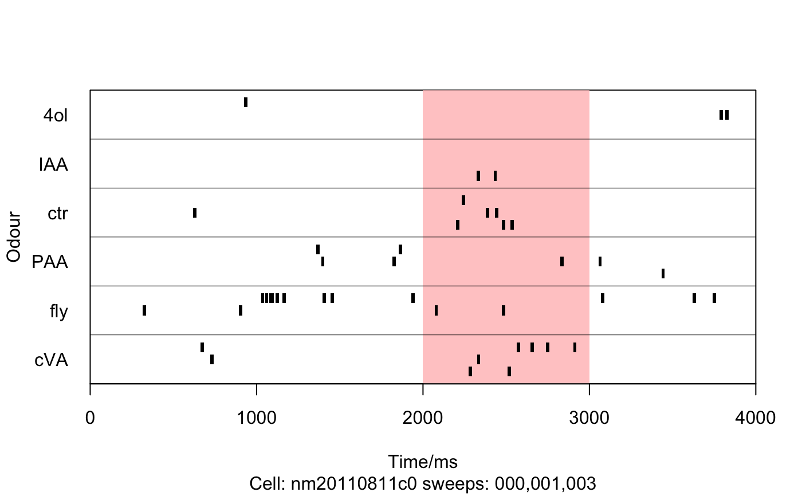
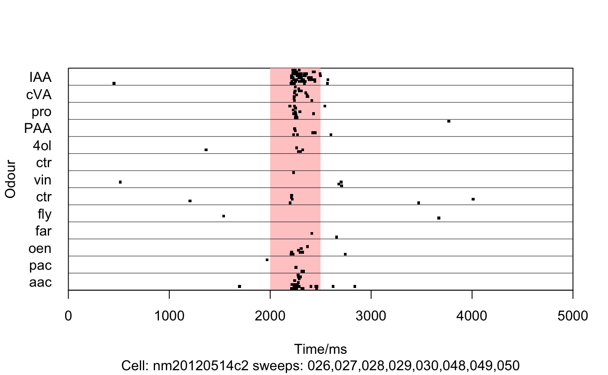
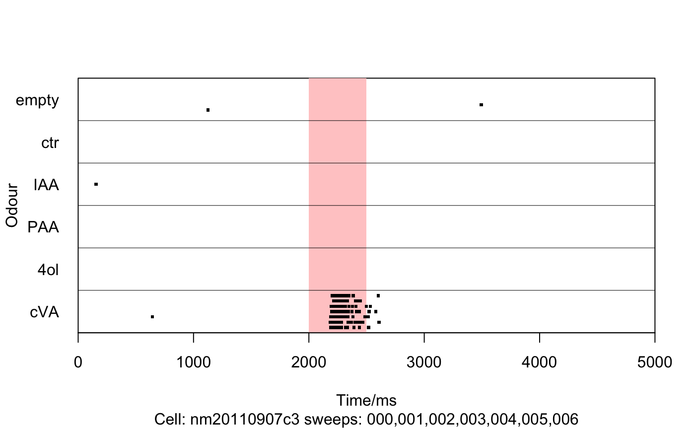
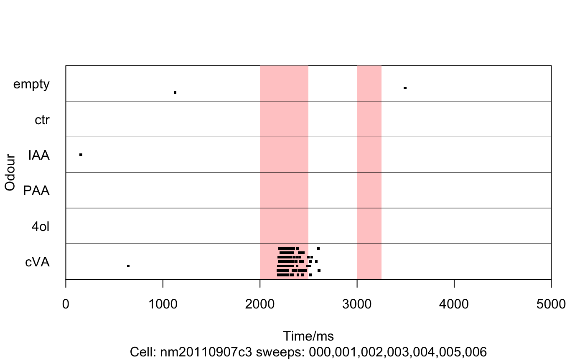

Make a raster plot from a set of Nclamp sweeps recording odour responses
PlotRasterFromSweeps.RdMake a raster plot from a set of Nclamp sweeps recording odour responses
This overloads base R's plot and calls PlotRasterFromSweeps
PlotRasterFromSweeps(sweepdir, sweeps, subdir = "", subset = NULL, xlim = NULL, xaxis = TRUE, yaxis = TRUE, frame.plot = TRUE, xaxs = "i", yaxs = "i", main, sub, xlab = "Time/ms", ylab = "Odour", pch = 22, dotcolour = "black", dotsize = 0.5, dotwidth = 20, spikeheight = 0.8, odourRange = NULL, odourCol = rgb(1, 0.8, 0.8, 1), relabelfun = identity, fixChannels = NULL, IncludeChannels = FALSE, PlotSpikes = TRUE, PlotDividers = TRUE, DividerCol = "black", DividerLwd = 0.5, panel.first = NULL, panel.last = NULL, ...) # S3 method for spiketimes plot(x, ...)
Arguments
| sweepdir | directory containing Nclamp pxp sweep files |
|---|---|
| sweeps | Vector of sweeps to include (e.g. 1:7) or character regex which sweeps must match. |
| subdir | subdirectory containing group of spike times txt files |
| subset | Numeric vector of channels or character vector of odours |
| xlim | x axis range of plot |
| xaxis | (default TRUE) |
| yaxis | (default TRUE) |
| frame.plot | Plot a box around the whole plot (default TRUE) |
| xaxs, yaxs | Whether to extend xlim,ylim by 4 percent (see ?par, default FALSE) |
| main | main title of plot (see |
| sub | subtitle of plot |
| xlab | axis label (default Time/ms) |
| ylab | axis label (default odour) |
| pch | plotting character (default 22 is a square, see details for rect) |
| dotcolour | colour of dots in raster plot (default black) |
| dotsize | size of dots in raster plot (default 0.5) |
| dotwidth | Width in ms of rectangle when pch='rect' |
| spikeheight | Relative height of spike when pch='rect' (default 0.8) |
| odourRange | time window of odour delivery |
| odourCol | colour of odour window (default pale red) |
| relabelfun | function to apply to odour labels (default no relabelling) |
| fixChannels | Optional named integer vector that remaps some bad numeric channels to correct odours. FIXME shouldn't we fix channels as well. |
| IncludeChannels | include numeric id of odour channel (e.g. for blanks) |
| PlotSpikes | Whether to plot the spikes (default TRUE) |
| PlotDividers | Plot the dividing lines between odours (default TRUE) |
| DividerCol | the colour with which to plot dividing lines between odours (default black) |
| DividerLwd | the width of the lines between odours (default 0.5) |
| panel.first | An |
| panel.last | An |
| ... | Additional parameters passed to plot |
| x | A spiketimes object |
Details
Note that can also give a spiketimes list from CollectSpikesFromSweeps By default the odour stimulus is represented by a pale red rectangle in a layer behind the spikes. If pch takes the special value "rect" then rectangles of width dotwidth are drawn. spikewidth will then specify the relative size of the spikes with 1 resulting in the top of spikes from one line at the same height as the base of spikes in the line above. If more than one stimulus is required, odourRange can be specified as a vector of successive start,stop times e.g. c(start1,stop1,start2,stop2).
See also
CollectSpikesFromSweeps,
AddLinesToRasterPlot,fix.odd and
plot.default for graphical parameters
PlotRasterFromSweeps, spiketimes
Examples
## Plot time range 2-4s with odour pulse 2-3s for sweeps 0,1,3 PlotRasterFromSweeps( system.file('igor','spikes','nm20110811c0',package='gphys'), c(0,1,3),xlim=c(2000,4000),odourRange=c(2000,3000))# Use rectangles for spikes instead PlotRasterFromSweeps( system.file('igor','spikes','nm20110811c0',package='gphys'), c(0,1,3),xlim=c(0,4000),odourRange=c(2000,3000),dotwidth=20,pch='rect')## Fix a bad label, first define a function relabel=function(labels) {labels[labels=="fly"]="empty";labels} ## and then use it PlotRasterFromSweeps( system.file('igor','spikes','nm20110811c0',package='gphys'), c(0,1,3),relabelfun=relabel)## Example with block based organisation ## i.e. spike files sorted into different subdirs for each stimulus protocol PlotRasterFromSweeps( system.file('igor','spikes','nm20120514c2',package='gphys'), subdir='BLOCKA',odourRange=c(2000,2500),xlim=c(0,5000))## Example of fixing one of Jonny's traces when channels were mixed up fixVec=c(empty=31,IAA=30,cVA=29,PAA=27,`4ol`=26,ctr=25) PlotRasterFromSweeps( system.file('igor','spikes','nm20110907c3',package='gphys'), subdir='BLOCKI',odourRange=c(2000,2500),xlim=c(0,5000),fixChannels=fixVec)## Imagine a double odour stimulation PlotRasterFromSweeps( system.file('igor','spikes','nm20110907c3',package='gphys'), subdir='BLOCKI',odourRange=c(2000,2500,3000,3250),xlim=c(0,5000), fixChannels=fixVec)options(gphys.datadir=system.file('igor','spikes',package='gphys')) spikes=CollectSpikesFromSweeps('nm20120514c2',subdir='BLOCKB') plot(spikes)